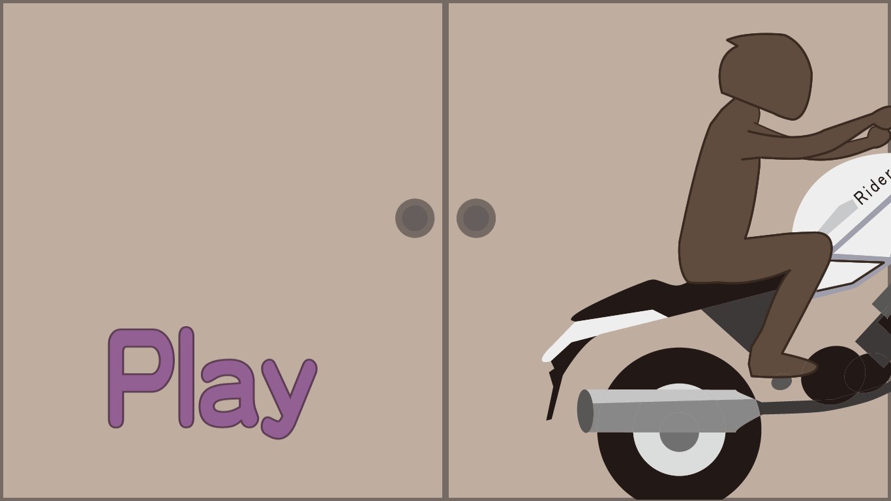
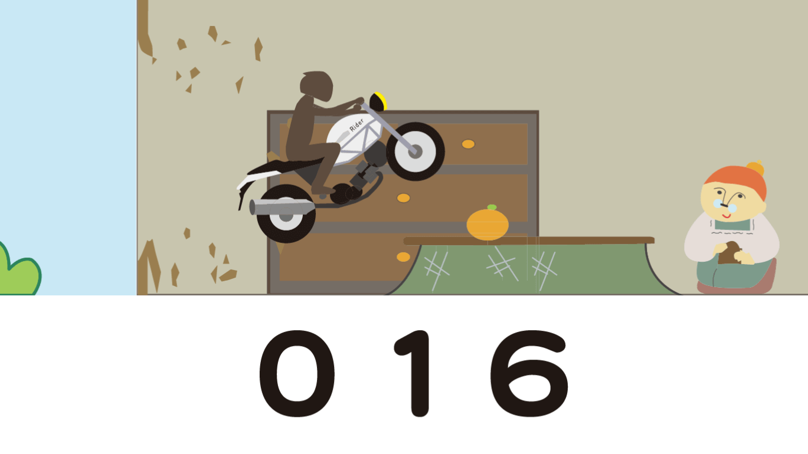

卓プロジェクト「canvas」
- Design
- JavaScript
名古屋市立大学で毎年開催され続けている卓プロジェクトで、WEB卓canvasに参加したときの作品。
初めてHTMLやCSS含めたプログラミング言語に触れたのがこのときで、そういう意味で想い出がつまっているものです。HTML5のcanvasと、JavaScriptライブラリ群CreateJSを用いたWEBアプリケーション。
初めて、
プログラミング言語に触れた
本当に何もかも初めてでした。ブラウザが何者なのかもイマイチ掴めていなかったし、Safari＝音楽視聴アプリだと思ってましたからね。そんな人間がいきなりCreateJSを使ってアプリを作りましょう！となっても作れるはずもありません。笑
その年のWEB卓長だった先輩に、つきっきりで教えてもらっていました。
WEBにはまる
「WEB」といってはざっくりしすぎてますが、いわゆるフロントエンドの部分。canvas卓に入ってJavaScriptやHTML/CSSの面白さに出会い、WEBを積極的に学ぶようになりました。
卓展が終了したあと、「ポートフォリオサイトを作ってみたら？作品がなくても作ることが勉強になるから」と言われたことをきっかけに、ポートフォリオサイトを作り始めたものの、
canvasを使ったWEBアプリを、手取り足取り教えてもらいながら作った、という経験しかなかったのでWEBサイトに関する知識が皆無でした。
その無知ゆえに、canvas上に全部描画していたんですよね。。ナビゲーションとか。。これも今となってはいい想い出。
完成した作品はこちら
HTMLとCSSとJavaScriptの違いもわからず、Illustratorの使い方もわからずでした。そんなこんなで良い思い出のつまった作品です。
 